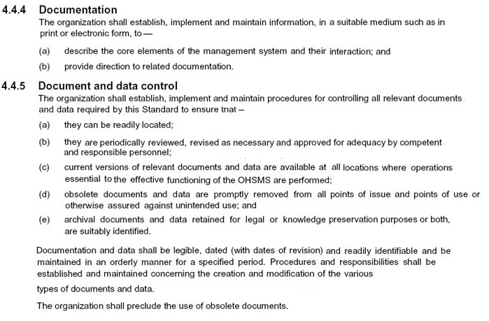
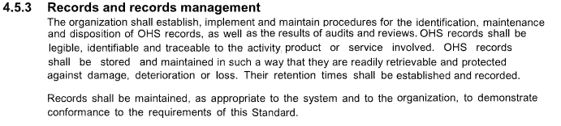
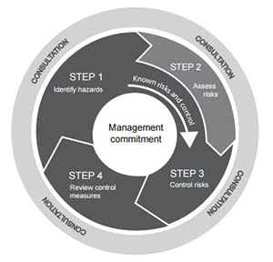

Element 4
Establish and review communications and educational programs.
Work health and safety in the construction industry is regulated by states and territories. The Occupational Safety and Health Act 1984 (the OSH Act), together with Occupational Safety and Health Regulations 1996 (the Regulations), are the principal legislation governing occupational safety and health in Western Australian workplaces. The WHS Act places the primary duty of care and various other duties and obligations on a 'person conducting a business or undertaking' (PCBU).
The OSH Act 1984- Part III -General provisions relating to occupational safety and health lists in section the 19. Duties of employers and section the 20. Duties of employeesAll persons working on building sites require information, advice, assistance and training to do their work. They should fully understand the health and safety risks that are part of that work. Linguistic differences can present significant challenges to communicating health and safety information. Communication to employees should therfore be in appropriate languages and forms, and ensure that any employees who do not speak English are properly represented in consultation on workplace health and safety.
The application of different health communication strategies and educational programs needs a customized approach and should be tailered to the building and consruction industry.
In most cases companies have the objects of the Work Health and Safety Act (the WHS Act), which is to provide for fair and effective workplace representation, consultation, cooperation and issue resolution in relation to work health and safety.
The law requires employers to provide, so far as is reasonably practicable, a safe working environment for their employees. All employees require information, advice, assistance and training to do their work; fully understand the health and safety risks that are part of that work; and help keep their work environment safe.Regulation 2.2 |
Introductory and transitional courses for, and entitlements under Act s. 35(3) of, safety and health representatives |
It would be too burdensome for employers to do a safety induction course for persons who would works/visits building site. So most employers isits that persons have the nesessary safety traning when they want to work/visit constuction site. The possesion of the Construction Induction Card (White Card) exempt the emloyer fom his duty of safety training. See Safety-Legislation site for White Card courses. (WorkSafe changed the design of construction induction cards from 'blue' to 'white' as a result of harmonisation of training across all States and Territories.)
Safety Officer
By law builders are reponsible for the Health and Safety for their employees. Therefore most builders appoint Safety Officer to ensure
Workplace Health and Safety. Some of the duties of Safety Officer are listed below:
► provide advice, information and instruction on local OHS issues
► assist in the application of OHS procedures
► help manage risks and hazards in their area
► report and investigate incidents, injuries and hazards and implement agreed control measures
► review and analyse injury and incident reports and data
► develop injury and incident prevention strategies for their area
► monitor local area compliance with OHS policy and procedures
► help promote OHS awareness.
Model work health and safety laws consist of the Model Work Health and Safety (WHS) Act, supported by model WHS regulations, model Codes of Practice. Please note that these are commonweath laws. Most references are made to WA safety laws
Health and Safety Representative Part 7 Occupational Health and Safety Act 2004 (OHS Act)
The OHS Act provides for the election of HSRs to represent the employees in Designated Work Groups (DWGs) .
A builder who conducts a business must consult with workers who carry out work for the business who are affected by a work health or safety matter.
A worker may ask for a Health and Safety Representative (HSR) to be elected to represent them on work health and safety matters.
Workers would contact the union official to organise the election of a HSR. HSRs ensure that workers’ views are heard on
WHS matters.
Health and Safety Committees (39B. Employer may establish S&Hcommittee;
39C S&H committee, agreement as to members etc).
Employers must establish an HSC within three months after being requested to do so by an HSR. Committees bring together
employees’ knowledge and experience of jobs and tasks and the
employer’s perspective of the workplace.
Employer representatives on the HSC should be persons involved at
senior management levels in the organisation who are able to make
decisions about health and safety.
OHS Management
Builders can help to protect themselves and their employees by implementing an occupational health and safety management system (OHSMS). OHSMS helps builders to continually improve their safety performance and compliance to health and safety legislation and standards.
The AS/NZS 4801:2001 standard sets out the requirements you’ll need to meet for an effective health and safety management system. Based on established Health and Safety standards, they are designed to work for builders of all sizes and from across all sectors. A periodically review of policy and objectives to confirm they are still appropriate and delivering intended outcomes.

AS/NZS 4801:2001Occupational Health and Safety Management Systems Specification with guidance for use.
This continual monitoring and review will require appropriate administration systems as outlined in the following extracts of 4801:2001, Occupational Health and Safety Management Systems.



The implementation of OHSMS confronts barriers in several important and growing sections of business. These are summarised below:

Much more information can be found on the OHSMS website NOHSC Review of their Effectiveness in Securing Healthy and Safe Workplaces
Three types of barrier to OHSMS success were distinguished. These are listed in Section 8 Conclusion:
8.2 Barriers to OHSMS Success.......Page 57
The management system must be monitored and reviewed against explicit criteria. Risk Criteria are developed at the outset of the Risk Management Process and should be continually reconsidered as part of the review process.
The WorkSafe WA workbook is an audit plan and a tool for review of a Safety and Health Management System.